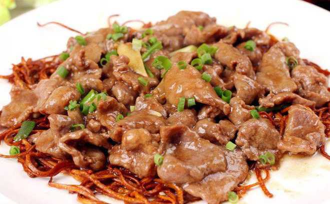
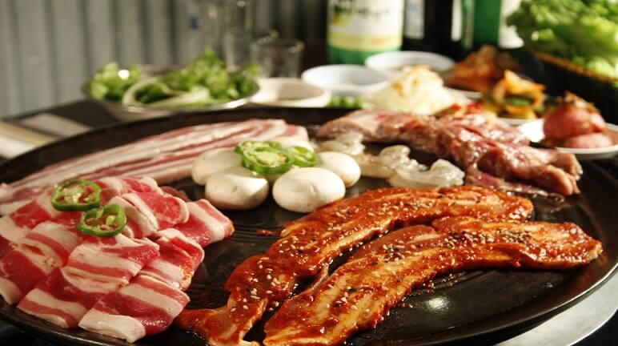

Cẩm nang bỏ túi cách rã đông và chế biến các loại thịt
04-04-2020
Thường các loại thịt sau khi bảo quản ngăn đông sẽ mất bớt đi hương vị tươi ngon, tuy nhiên nếu nắm được các bí quyết sau thì đảm bảo thịt khi được chế biến vẫn thơm ngon chẳng khác gì thịt tươi mới mua từ chợ về.
1. Rã đông thịt, cá khi không có lò vì sóng
Nếu nhà bạn không có lò vi sóng, hãy dùng cách sau để rã đông thịt cá nhanh trong 15 phút:
Bước 1: Pha một bát nước ấm khoảng 40 độ C( tỉ lệ 5 lạnh 2 sôi)
Bước 2: Đối với thịt thì cho 2 muỗng cà phê canh đường vào tô quấy đều, đối với cá thì thay đường bằng muối.
Bước 3: Ngâm thịt, cá trong bát nước khoảng 15 phút và lấy ra chế biến.
Các bạn lưu ý nếu giã đông bằng nhiệt độ phòng, không nên để thực phẩm quá 1 tiếng mới mang đi chế biến, như thế thịt cá sẽ có mùi hôi và có thể hỏng.
2. Dùng bia xào thịt sẽ làm thịt mềm và đậm hơn

Thịt sau khi đã pha và ướp gia vị, ta cho thêm một ít bia vào ướp trước khi xào nấu, món thịt sẽ mềm và ngon hơn. Khi ướp bia như vậy, chất men bia sẽ có tác dụng phân giải nhanh chóng các chất protein và lipit có trong các loại thịt.
3. Cho một vài giọt giấm khi hầm thịt, xương
Khi hầm thịt ta cho thêm một chút giấm, thịt không những nhanh nhừ mà còn tác dụng khử được mùi hôi ở thịt.
4. Phèn chua làm món thịt kho tàu không ngấy
Khi ta làm món thịt kho tàu, trước hết chúng ta ngâm thịt với phèn chua (đã hoà ra nước) một lúc, sau đó mới cho thịt vào nấu, như vậy món thịt sẽ không còn bị ngấy nữa, khi ăn sẽ dễ ăn hơn.
5. Kỹ thuật khi nướng thịt

Khi nướng thịt, ta nên chú ý những vấn đề sau:
– Trước khi cho thịt vào để nướng, nên dùng nước sôi hoặc nước canh nóng trần qua thịt, như vậy món thịt sẽ mềm và khi nướng xong thịt sẽ giòn và dôi hơn.
– Khi nướng phải chú ý nướng lần lượt, nướng chín 1 mặt rồi đảo đi nướng mặt khác, không nên đảo đi đảo lại, như vậy vừa tốn thời gian, vừa lâu chín thịt.
– Trong lò nướng nên đặt một cái bát (hoặc chậu, tuỳ độ lớn của lò) đựng nước, như vậy nước chịu ảnh hưởng của nhiệt độ trong lò sẽ nóng lên bốc hơi làm cho miếng thịt không bị cháy đen và cứng lại.
6. Hun thịt (thịt hun khói) bằng lá chè, đường và gạo
Dùng lá chè, đường đỏ và gạo để hun thịt, vừa vệ sinh không có vi khuẩn, mà màu sắc và mùi vị lại đạt tiêu chuẩn và thơm ngon.
7. Cách chống dầu, mỡ bắn khi rán thức ăn
Khi rán thức ăn, ta cho thêm một ít muối vào chảo, như vậy dầu sẽ đỡ bắn lung tung ra ngoài.
8. Làm thế nào để miếng sườn rán không bị co lại
Trước khi rán sườn, nên xem những chỗ nào có gân dùng dao khứa hai, ba khía, như vậy khi rán sẽ không bị co lại.
9. Cách rán bì lợn
Nhiều người không thích ăn bì lợn, nhưng thực ra bì lợn khi rán là một món ăn khá ngon. Ta có thể làm như sau:
– Ngâm miếng bì lợn sống vào nước kiềm nóng.
– Dùng dao sắc hoặc bàn chải cứng cạo sạch lớp mỡ ở trên bì.
– Dùng nước ấm rửa sạch rồi hong khô.
Khi rán ta chỉ cần đun dầu hơi nóng là có thể cho bì lợn vào rán, miếng bì gặp mỡ nóng sẽ cuộn lại, chờ khi trên bề mặt bì xuất hiện những chấm phồng trắng thì vớt ra. Để một lúc cho miếng bì hơi nguội, đợi cho mỡ nóng già tiếp tục cho bì vào rán, đến khi miếng bì nổ hết và vàng đều là được.
10. Cách thái thịt mỡ
Khi thái thịt mỡ, trước tiên ta nên nhúng miếng thịt đó vào nước lạnh, sau đó đặt lên thớt thái vừa thái vừa rắc một ít nước lạnh lên thớt như vậy thái không phải dùng sức, miếng mỡ không bị trơn truột cũng không dính chặt vào thớt.
11. Thịt mỡ và cách chống béo
Nếu muốn làm cho miếng thịt mỡ ăn không bị ngấy, ta nên làm như sau:
– Thái miếng thịt mỡ thành những lát mỏng, ướp gia vị rồi cho lên nồi đun.
– Dựa vào tỷ lệ 500g thịt; 1 miếng đậu phụ nhự, cho miếng đậu phụ vào bát cùng với một ít nước ấm, dầm tan miếng đậu phụ, chờ cho thịt trong nồi sôi thì đổ đậu vào, tiếp tục đun từ 3-5 phút.
Dùng biện pháp này để nấu thịt mỡ, khi ăn thịt sẽ không bị ngấy, ngược lại rất thơm ngon và hợp khẩu vị.
12. Canh sườn nên cho thêm giấm
Canh sườn thường rất ngon và nhiều dinh dưỡng. Nếu hầm sườn, ta cho thêm ít dấm thì sẽ có tác dụng làm cho các chất canxi, lân, sắt trong sườn tiết ra hết giúp ta tận dụng hết dinh dưỡng của sườn, giúp cho canh có giá trị chất dinh dưỡng cao hơn. Ngoài ra, giấm còn có tác dụng làm cho các chất vitamin trong thức ăn không bị mất đi trong quá trình đun nấu.
13. Khi thịt bị bẩn nên dùng nước gạo rửa thịt
Nếu miếng thịt bị dây bẩn mà ta dùng nước lã để rửa thì miếng thịt không những không sạch mà còn nhầy nhụa và có vẻ bẩn hơn. Gặp phải trường hợp này, tốt nhất ta nên dùng nước gạo ấm để rửa thịt như vậy các vết bẩn sẽ sạch hết.
14. Cách rửa thịt bị dây dầu hoặc có mùi hôi
Khi thịt bị dây dầu hoả hoặc dầu ma dút dầu máy hay có mùi hôi, ta chỉ cần dùng nước chè ngâm khoảng chừng 30 phút rồi rửa sạch, miếng thịt sẽ hết mùi và lại chế biến thức ăn bình thường.
15. Làm tan thịt đông lạnh cần phải dùng nước lạnh hoặc nước muối
Nếu ta dùng nước nóng làm tan thịt đông lạnh, thịt sẽ mất hết chất dinh dưỡng và vị tươi ngon của nó. Cách tốt nhất là lấy nước lạnh, nhất là nước muối để làm tan thịt đông lạnh, như vậy mới giữ được chất dinh dưỡng lại vừa hợp vệ sinh.
16. Nước gừng có thể làm thịt đông lạnh trở lại tươi
Tất cả các loại thịt đông lạnh trước khi chế biển nên dùng nước gừng ngâm, như vậy thịt sẽ tươi ngon trở lại.
17. Khử mùi thịt bằng cơm và rượu trắng
Thịt lợn để lâu chẳng may có mùi hôi. Gặp phải trường hợp này, khi đun nấu ta cho vào thịt 3 – 5 cọng rơm, sau khi luộc chín cho thêm vào vài giọt rượu trắng rồi vớt ra để ráo nước, sau đó tiếp tục chế biến món ăn, thịt sẽ không còn mùi hôi nữa và thức ăn sẽ thơm ngon như thịt tươi.
18. Củ cải trắng khử vị chát của thịt muối
Thịt muối để lâu thường có vị chát, trươc khi xào nấu thịt nếu ta luộc thịt cùng với củ cải trắng thì vị chát sẽ không còn nữa. Còn bên ngoài thịt có mùi thì ta chỉ cần dùng nước cho thêm một ít dấm để rửa là hết mùi.
19. Giữ thịt tươi lâu bằng khăn tẩm giấm
Nếu ta gói thịt vào trong khăn sạch đã nhúng qua giấm, thịt không cần để tủ lạnh cho dù phải để qua đêm cũng vẫn tươi nguyên.
Theo Bếp Roll tổng hợp